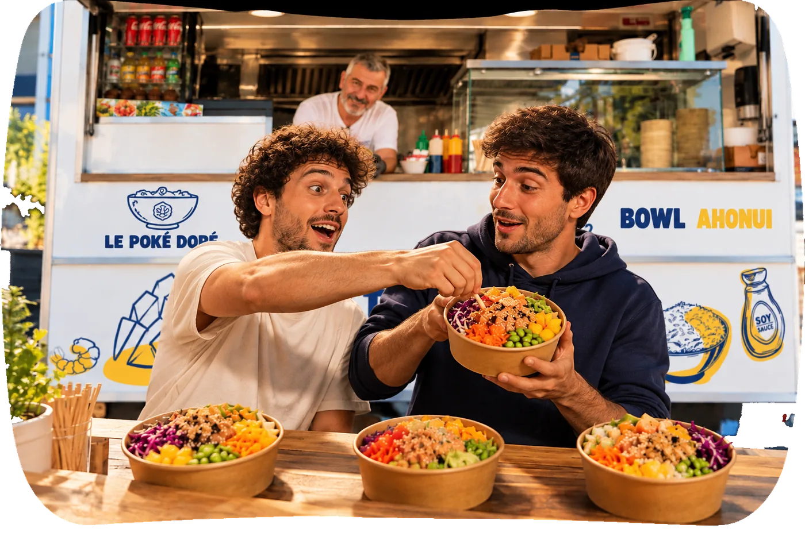
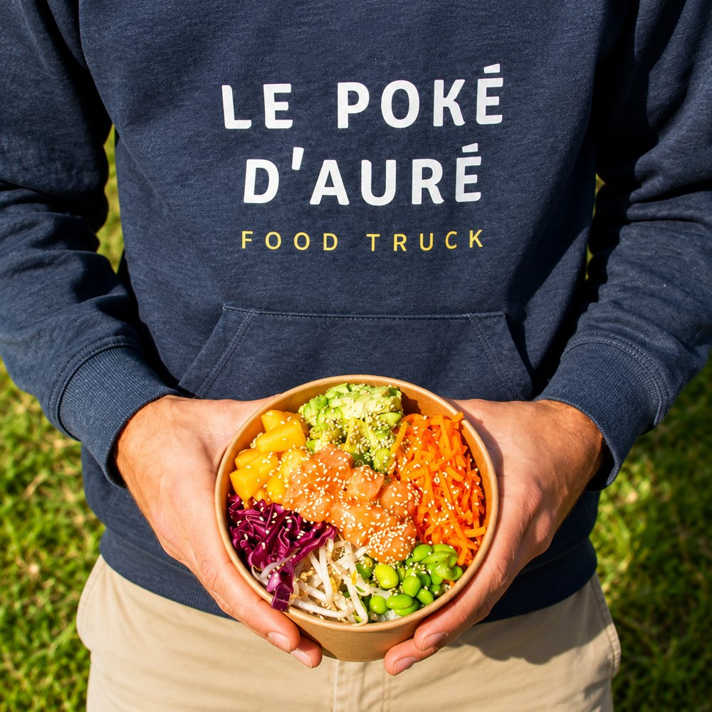
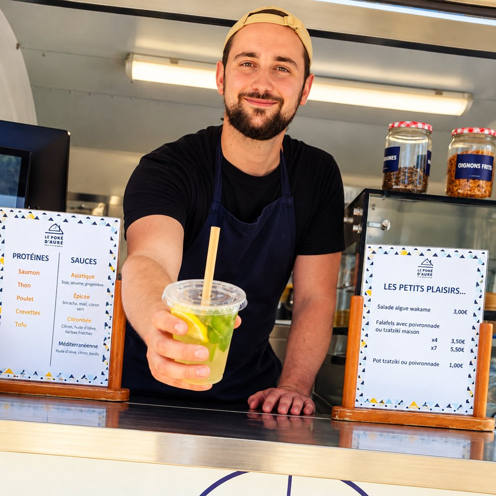

Notre histoire



Le Poké Doré c'est avant tout l'histoire d'une famille qui aime les bons poké bowls bien frais, préparés chaque jour dans notre food truck !

Tout a commencé
avec un bowl
Un premier food truck, Le Poké d'Auré, posé sur les parkings et les places de Marignane.
À l'époque, personne ne connaissait vraiment le poké bowl dans le coin. Alors on a fait simple : du saumon frais, des légumes de saison, une sauce maison, et on a laissé les clients goûter.
Très vite, les habitués reviennent, les collègues de bureau s'y mettent, et le bowl devient le rendez-vous du midi. On se rend compte qu'un repas rapide peut aussi être frais, sain et franchement bon.

Puis Lucas a repris
le volant
Même truck, même exigence sur les produits, mais une envie d'aller plus loin : tout faire maison, des marinades aux desserts, en passant par la citronnade que les clients réclament.
Chaque matin, on découpe, on marine, on prépare. Chaque midi, on compose les bowls sous tes yeux, avec le sourire et un conseil si tu hésites.
Et quand les pompiers de Rognac ont passé la nuit sur le feu de forêt, le food truck est venu leur servir à manger. Parce que nourrir les gens, c'est aussi ça.
Le Poké Doré, c'est né comme ça !